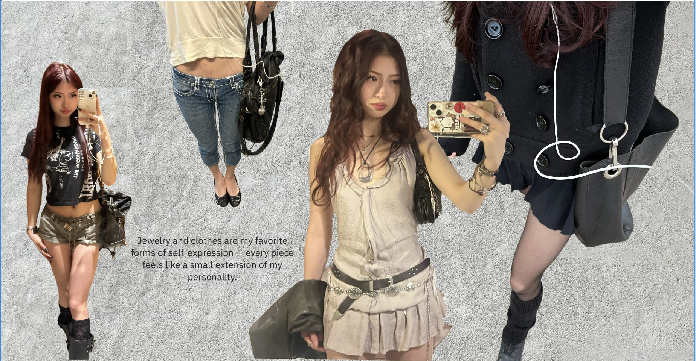
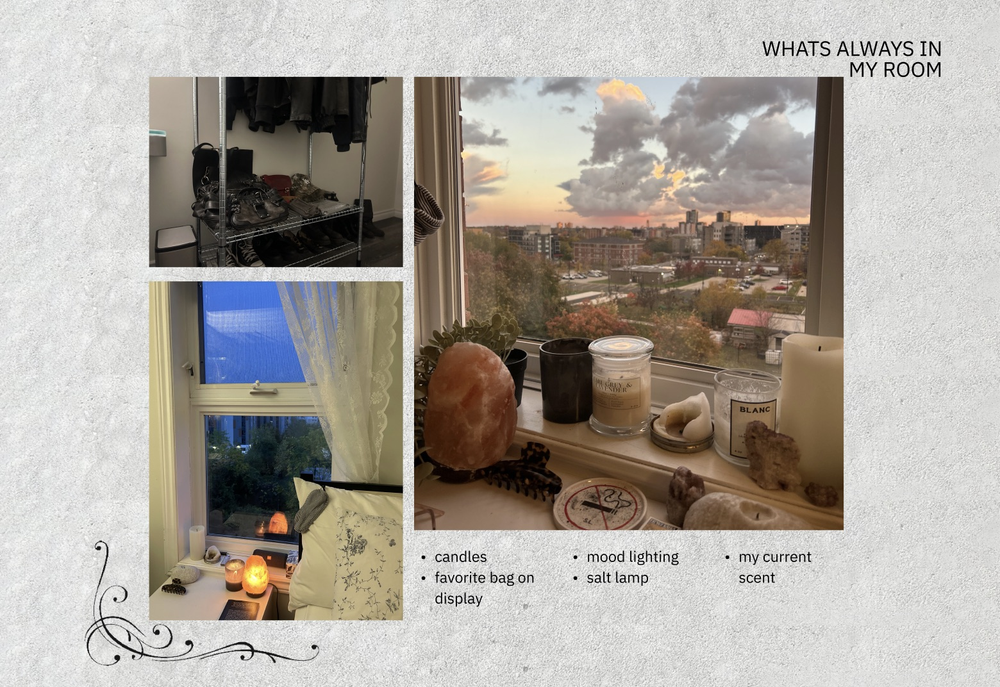
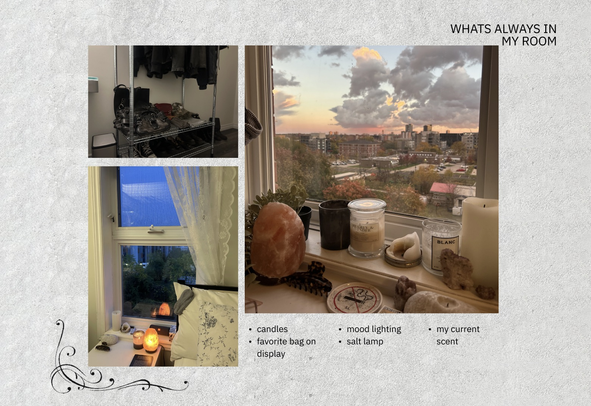
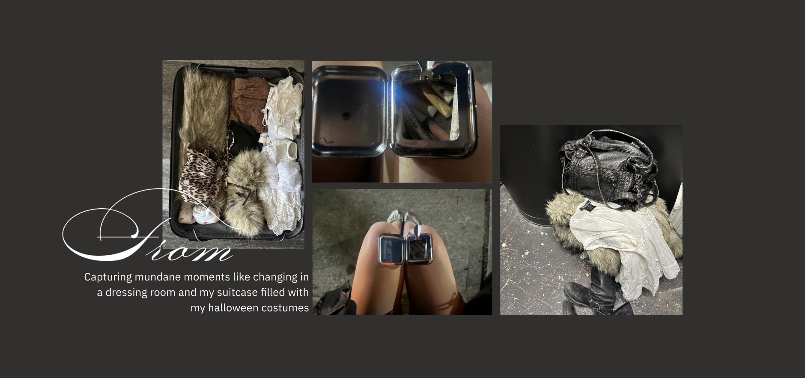
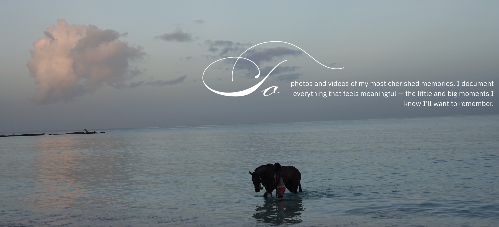

Style &
Self-Expression
I love planning my outfits in advance because it gives me a quiet moment to think, experiment, and play with different combinations before the day even begins. This little ritual of setting aside time to get ready keeps me grounded, inspired, and connected to my creativity.
My room is a reflection of my mind: warm, lived-in, and always evolving. I keep candles lit, clothes displayed, and little corners curated because my environment shapes how I think and create. I love turning my space into something cozy and inspiring, where I can recharge and stay creative.
Even my dorm became my own. The pictures I choose to display on my wall — from artist posters to photos of people and memories I love — reflect the media and moments that inspire me.
Surrounding myself with these visuals makes the space feel truly mine, and having this curated environment sparks my creativity every day.
 

Documentation
PHOTOS + VLOGS
VLOG LINKI love documenting my life in different ways — from journaling my thoughts to taking photos and recording vlogs. These practices let me reflect, notice the little details around me, and turn everyday moments into something creative. Capturing my world this way keeps me grounded while inspiring new ideas and projects.
 When I journal, I get to untangle my thoughts and turn them into something meaningful. It’s a quiet ritual that keeps my creativity alive and helps me understand what’s inspiring me in the moment.
JOURNAL